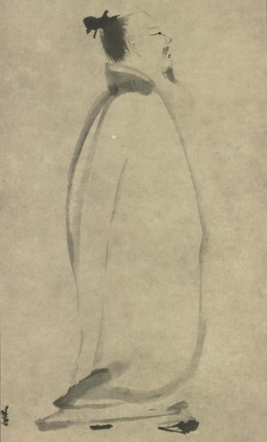

李白（701年—762），字太白，号称“诗仙”，自号“青莲居士”，唐朝诗人。李白在蜀中长大，二十四岁开始出蜀漫游各地，力图获得官员的举荐而入仕，但事与愿违多次碰壁，四十二岁时李白因其高士声名而名动京师，获唐玄宗征召，出任翰林供奉，成为宫廷诗人，但两年后李白即因被中伤和排挤而请辞。安史之乱事后，李白被牵连获罪下狱，流放夜郎，途中遇赦而还，六十二岁去世。
李白的诗存世约有1000首，诗风飘逸奔放，想象大胆，富于独创性，充满浪漫主义情调，于绝句与乐府歌行体成就尤大，代表作有《静夜思》、《将进酒》、《蜀道难》等。李白自认有栋梁之才，既有经世济民的志愿，也怀有出世隐居的愿望。李白是最为知名的中国诗人，对后世有巨大影响，与杜甫一起自九世纪初就被认定是盛唐最伟大的诗人。
噫吁嚱，危乎高哉！蜀道之难，难于上青天！
蚕丛及鱼凫，开国何茫然！
尔来四万八千岁，不与秦塞通人烟。
西当太白有鸟道，可以横绝峨眉巅。
地崩山摧壮士死，然后天梯石栈相钩连。
上有六龙回日之高标，下有冲波逆折之回川。
黄鹤之飞尚不得过，猿猱欲度愁攀援。
青泥何盘盘，百步九折萦岩峦。
扪参历井仰胁息，以手抚膺坐长叹。
问君西游何时还？畏途巉岩不可攀。
但见悲鸟号古木，雄飞雌从绕林间。
又闻子规啼夜月，愁空山。
蜀道之难,难于上青天，使人听此凋朱颜！
连峰去天不盈尺，枯松倒挂倚绝壁。
飞湍瀑流争喧豗，砯崖转石万壑雷。
其险也如此，嗟尔远道之人胡为乎来哉！
剑阁峥嵘而崔嵬，一夫当关，万夫莫开。
所守或匪亲，化为狼与豺。
朝避猛虎，夕避长蛇；磨牙吮血，杀人如麻。
锦城虽云乐，不如早还家。
蜀道之难,难于上青天，侧身西望长咨嗟！
君不见，黄河之水天上来，奔流到海不复回。
君不见，高堂明镜悲白发，朝如青丝暮成雪。
人生得意须尽欢，莫使金樽空对月。
天生我材必有用，千金散尽还复来。
烹羊宰牛且为乐，会须一饮三百杯。
岑夫子，丹丘生，将进酒，杯莫停。
与君歌一曲，请君为我倾耳听。
钟鼓馔玉不足贵，但愿长醉不复醒。
古来圣贤皆寂寞，惟有饮者留其名。
陈王昔时宴平乐，斗酒十千恣欢谑。
主人何为言少钱，径须沽取对君酌。
五花马，千金裘，呼儿将出换美酒，与尔同销万古愁。
床前明月光，疑是地上霜。
举头望明月，低头思故乡。